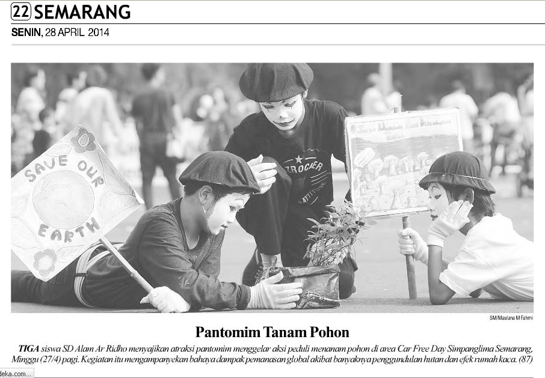
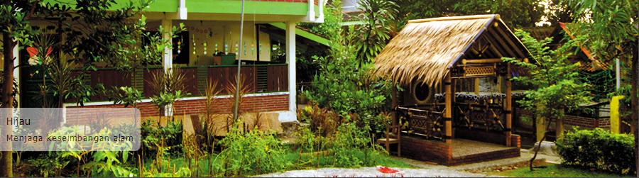
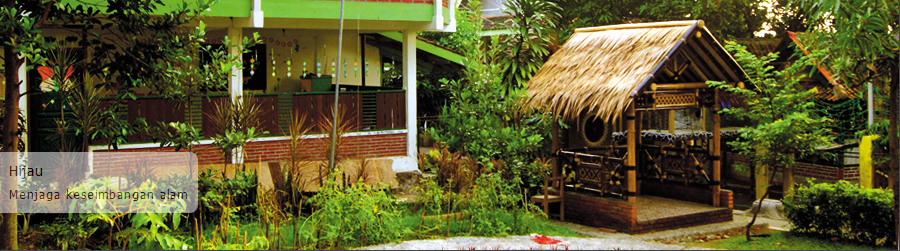

Mewujudkan misi Sekolah Alam Student Scouting ( SASS ), yaitu terlahirnya siswa yg bertaqwa, cakap memimpin serta memiliki fisik yang sehat dan kuat, maka kelas 3 dan 4 SD Sekolah Alam Ar Ridho mengadakan OTFA 2 ( OUT TREKKING FUN ADVENTURE ) di Nglimut gonoharjo. Acara ini dilaksanakan selama tiga hari. Dari tanggal 29-31 Oktober 2017.
Semoga pengalaman yang berguna buat masa depanmu nak, selama 3 hari 2 malam. Salah satu tata tertib yang menarik adalah, orang tua peserta tidak boleh menengok anak yang sedang mengikuti OTFA. Seandainya menengok pun harus tidak sepengetahuan peserta, jadi hanya melihat dari jauh saja dan atas ijin panitia. Ya, agar kemandirian dan keberanian, yang menjadi motto OTFA 2 ini menemukan bentuknya pada diri anak-anak. Minimal ketika berpisah untuk sementara dengan ayah dan bundanya

Ahad (27/04) pagi, Sekolah Alam Ar-Ridho melakukan Aksi Hari Bumi di Car Free Day jalan Pahlawan dan Simpang Lima, Semarang. Aksi dimulai dengan karnaval sekitar 60 orang siswa kelas 4 dan 5 SD. Dengan start di depan Citraland dan berakhir di Air Mancur Jl. Pahlawan. Di bunderan Air Mancur telah menunggu siswa lainnya yang tergabung dalam Ekstrakurikuler Perkusi Barang Bekas. Tak jauh dari sana, puluhan siswa SMP juga beraksi dengan beragam kegiatan bisnisnya.
Selain karnaval dan perkusi, Sekolah Alam Ar-Ridho juga menggelar aksi yang melibatkan kelas-kelas Talenta. Diantaranya Talenta Gardening yang membagi pohon keras dan bunga kepada warga secara cuma-cuma. Talenta Cooking yang menggelar lapak Tukar Botol dengan Sayur dan Buah, juga Talenta Craft yang memamerkan karya kerajinan dari barang bekas.
Talenta Public Speaking juga tak mau kalah, mereka berpuisi, dan berorasi, bahkan menjadi MC memandu acara di pusat keramaian. Sementara Talenta Seni Pertunjukan/Teater mempersembahkan Pantomim dan HUmanoid. Aksi mereka sempat menarik para fotografer media massa.
Acara yang dimulai pukul 08.00 ini berakhir pukul 08.30 WIB. Diakhiri dengan orasi dari Direktur Sekolah Alam Ar-Ridho, Bu Mia Inayati dan penandatanganan spanduk Hari Bumi : "We Care-Green Life Style and Act Now".
+ Hotline PSB +
Kantor : 024-76484001 Arsy : 0838-3829-1880
: 0838-3829-1880
: @arridhoofficial : SA Ar-Ridho Official : PAUD Alam Ar-Ridho : SMP Alam Ar-Ridho
Alamat : Jl. Kelapa Sawit I Blok AA Bukit Kencana Jaya Meteseh Tembalang Semarang Jawa tengah 50271 sekolahalamarridho@ yahoo.com
+ Quote +
"Ilmu itu berkembang biak dengan menginfakkannya. Jika orang berilmu memberikan ilmunya kepada manusia dan menginfakkannya pada mereka, maka mata air ilmunya memancar kemudian ilmunya bertambah banyak, kuat, dan menonjol. Ilmu yang dipelajarinya terjaga dengan ia mengajarkannya kepada orang lain, bahkan ia mendapat pasokan ilmu baru yang sebelumnya belum ia ketahui"

 
